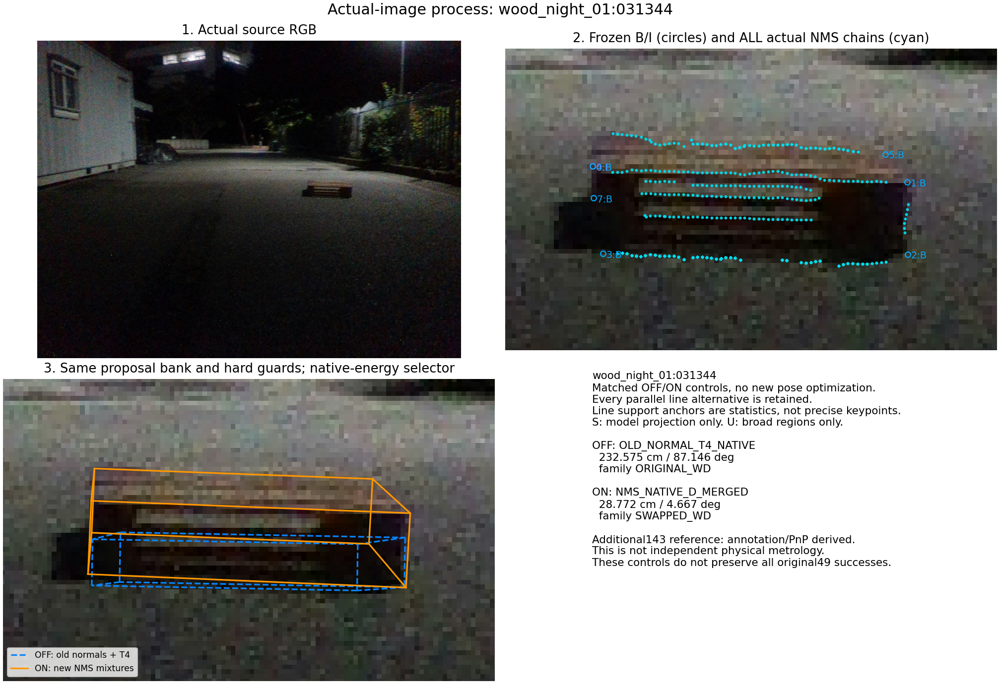
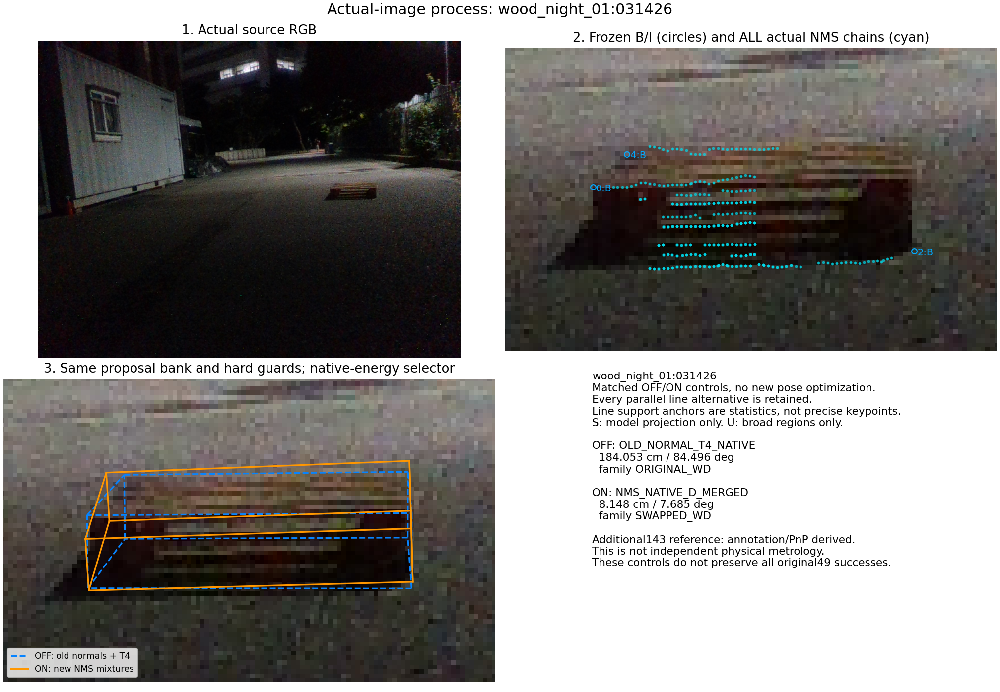
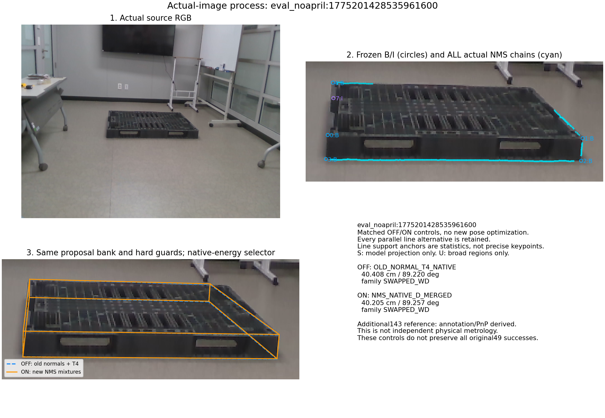

wood_night_01:031344

동일한 저장 자세 후보·O/T/U 제약·기존 B/I 관측을 사용하고, 기존 부분 법선만 사용할 때와 새 NMS 혼합 경계선을 적용할 때를 비교했습니다. CAL 46장은 주 평가에서 분리했고, severe는 제외했습니다. 추가 143장 기준은 annotation/PnP 유도값입니다. 기존 49장 모두 통과한 기본 방법은 유지합니다.
| 방법 | 49장 ≤5cm | 평균 cm | 최대 cm | 143장 ≤5cm | 평균 cm | 최대 cm |
|---|---|---|---|---|---|---|
| OLD_NORMAL_T4_NATIVE | 44/49 | 2.644 | 40.408 | 70/143 | 16.978 | 232.575 |
| OLD_NORMAL_T4_PLUS_MASK | 45/49 | 2.435 | 39.873 | 70/143 | 13.388 | 189.263 |
| NMS_NATIVE_D_MERGED | 44/49 | 2.768 | 40.205 | 71/143 | 11.937 | 156.064 |
| NMS_PLUS_MASK_D_MERGED | 44/49 | 2.150 | 16.793 | 70/143 | 14.367 | 189.263 |


